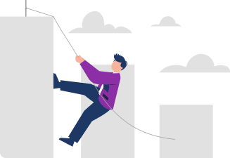

Здесь мы имеем в виду
«нормальный» в кавычках.
Это условно нормальный человек. На самом деле нормальных людей, наверное, не существует —
все мы абсолютно разные.
Но у каждого из нас есть представление о
нормальном среднестатистическом человеке.
И если вы будете превышать в своих целях или результатах достижения
в «нормального», среднестатистического для вас человека,
то у вас будет слетать норма.
Это когда у нас все идет, мы все прорабатываем, у нас приходит результат за результатом и вдруг мы получаем результат настолько волшебный, что все начинает лететь в тартарары и мы перестаем верить в методику на какой-то момент.
Нам кажется, что так не бывает, нам все это привиделось, показалось, никаких результатов на самом деле не было.
Кажется, что мы спугнули нашу цель и нашу удачу. А на самом деле просто слетела норма: в определенный момент под угрозу встало представление о реальности этой реальности.
Если все настолько прекрасно, почему у остальных людей не так, почему они так мучаются и страдают? Что, я один такой счастливый буду?
Почему нас это волнует?
По той простой причине, что мы очень социальные существа.
И вообще, почему для нас важно быть классным, быть нормальным?
Потому что это гарантирует нам определенное место в обществе.
Мы получаем определенную гарантию, что социум нас не отвергнет, мы будем нормальными, не будем какими-то выскочками, гениями, нас не распнут на кресте..
С нами все будет в порядке, мы будем в социуме и не будем выделяться.
На данном этапе для нас это необходимо. Нам нужно прожить это, нужно сначала очень четко укрепить себя в социуме.
И только потом,
на 5-ом уровне,
мы сможем как бы подняться над социумом: мы начнем ощущать, что социум —
это и есть я, и мне для этого не обязательно быть таким же, как все.
Но здесь нам это нужно, поскольку без этого этапа преждевременно говорить о безоценочности и полном принятии всего.
Чтобы перейти на следующий уровень,
нужно хорошо и правильно прожить этот уровень.
И для того чтобы уходить в глубину нормы и самооценки, нужно здесь все поставить на места.
Сделать нормальной самооценку.
Научиться повышать норму до любого уровня, вне зависимости от того, какой уровень нормы у окружающих нас людей.
И вообще понять, что результаты других людей в первую очередь зависят от вас.
Это мы разберем с вами, когда будем изучать
“Принцип Синхронности”, случится это совсем скоро
Очень важно, какие люди находятся вокруг нас. Когда я что-то прорабатываю и получаю свои результаты, для меня критически важно, чтобы люди вокруг меня тоже
прорабатывались и получались результаты.
Иначе я буду ощущать себя, как в Притче про короля, у которого сошло с ума все королевство.
Во всем царстве отравили колодцы, и люди, которые пили из них, сходили с ума, и только у короля было противоядие.
В итоге весь мир сошел с ума, кроме короля, но это ему нисколько не помогло.
Потому что все начали считать его сумасшедшим, а не наоборот.
И когда люди вокруг вас прорабатываются, когда они пользуются
Master Kit,
или в семье прорабатываются и жена, и муж — им гораздо проще общаться. У них появляется осознанность и схожее понимание: я этого хотела, ты этого хотел, и вообще все было потому, что для нас это было важно.
И вы видите, что не только вы получаете результаты, но и ваши близкие люди, ваше окружение.
И эта волна идет дальше.
Почему нам так хочется поделиться?
Потому что мы социальные существа, и мы не хотим получать свои результаты в одиночку.
Мы хотим, чтобы мы вместе двигались к своим целям.
Иначе случается, что мы становимся как король из сказки.
Какими бы прекрасными не были наши достижения, для нас важно, чтобы они были синхронны с миром, чтобы мы двигались вместе с миром и ощущали себя нормальными людьми вместе с нашими достижениями.
Для этого мы можем посмотреть образ нормального человека.
Вы заходите в тренажер «Образ» и вписываете: нормальный человек.
Смотрите представление о нормальном человеке, и если оно начинает вас смущать, если у вас нервное напряжение и вы видите, например, разведенную женщину с ребенком или человека с нелюбимой работой,
вас это будет трогать и захочется проработать это.
Потому что образ нормального человека, которого вы увидите в своем подсознании,
определяет ваше окружение.
Именно таких людей вы будете видеть в своем социальном поле.
Вы будете притягивать таких людей, создавать их, потому что они для вас реальны. Никакие другие люди для вас не реальны.
И, может быть, вам сознательно хочется общаться с другими, с теми, у кого были классные достижения в жизни, но если образ нормального человека другой, то это будет диктовать определенные условия. Поэтому прямо сейчас
проработайте представление о нормальных людях.
А в следующем шаге мы с вами поговорим о принципе синхронности. И о том, почему, прорабатываясь, мы влияем на других людей.